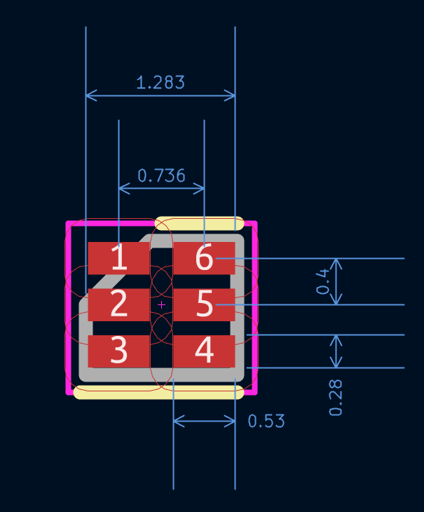

This project template is for quickly creating diagrams for Kicad symbols and footprints.
It is designed for "small" parts and has small graphical arrow sizes by default.
Example of a part diagram with the default dimensions provided by this template:
